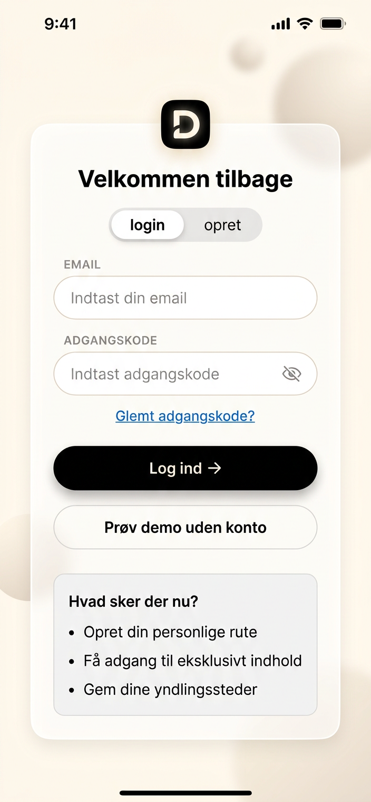
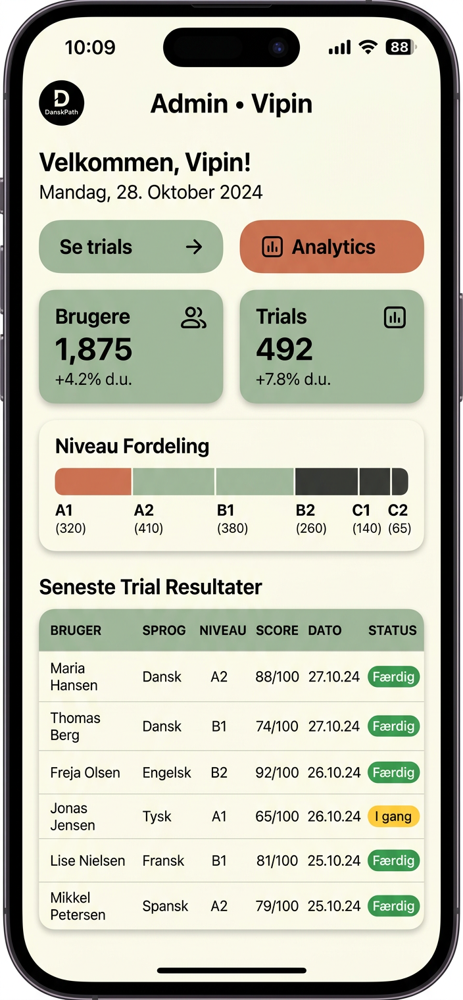

Permanent: https://danskpath.onrender.com • Ephemeral: https://accomplish-assigned-acute-appreciated.trycloudflare.com • Build: 0e5f3e7 Apple Premium

02 — Welcome Step 0
Welcome → Lær dansk på din måde, 3-step onboarding, Danish line art, progress dots

07 — Assessment Landing
Find dit niveau, 7 min 15 Q, 3 cards, Start test →

08 — Instructions
5 bullet points, what happens after, Start test →, Apple premium blur

09 — Test Q1
Clean distraction-free, only question + randomized options A B C, progress 4px shimmer, no learning path

12 — Results
67% Modul 3, strengths black pills, focus white pills, dark premium card timeline, Se min læringsvej →

13 — Path
Din læringsvej, only relevant stages, vertical timeline, active black premium, progress

14 — Practice
Hej klar til at øve? One clear action Fokus: Lytning, progress, quick access, weekly

05 — Login iPhone Premium
Velkommen tilbage, 56px inputs white/80 blur, segmented login/opret, primary black pill 56px, demo button, Hvad sker der nu? 3 bullets

15 — Admin Dashboard
Admin • Vipin, stats users trials level, trial analytics, secure JWT
Roadmap Case 1: New learner M1→PD3 9 months
Alphabet SVO en/et, focus V2, timeline 9 months
Roadmap Case 2: A2 learner M3→PD3 6 months
V2 Ledsætning Sin, focus writing
Roadmap Case 3: B1 learner M4→PD3 4 months
Bindeord jo/da/vel, PD3 structure 150-200 ord
Roadmap Case 4: B2 PD3 ready 2 months
Exam format, culture Folketing 179 flexicurity
Open app → Welcome (3 steps line art) → Login (fits viewport 56px) → Assessment landing (7 min) → Instructions (5 bullets Apple premium blur) → Test (clean distraction-free, randomized answers, no learning path, no variation labels) → Results (premium 28px badge glow, no crash) → Se min læringsvej → Path (only relevant stages, clean visual) → Practice (one clear action)